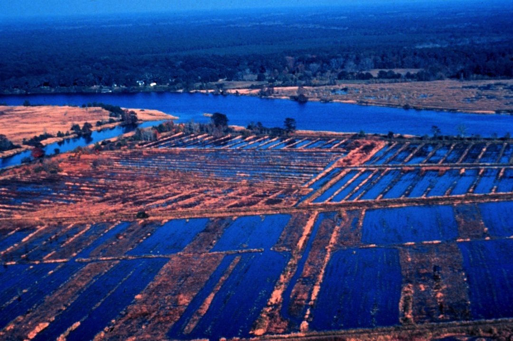

Ground-nuts and gold rice: how African knowledge built the Lowcountry landscape and economy
This article shows how African agricultural knowledge reshaped Lowcountry ecology, economy, and culture.

Ground-nuts and gold rice: how African farming built the Lowcountry landscape and economy
When Africans arrived in America, they brought knowledge and skills that had been carefully honed and passed down for generations. Although enslaved, their knowledge defined the work they did, breeding innovations that reshaped the world economy. This was especially true in the Lowcountry, a region which became one of the most agriculturally productive and lucrative in the world thanks, in large part, to the knowledge captive workers brought from Africa.
This same knowledge reshaped the landscape, however, for landscapes are never simply encountered. To inhabit a place, you must change that place, reshaping it to fit your needs. This interaction always involves imposing an imagined place upon its physical reality (and responding to the latter’s resistence). In some sense, agriculture is this process at scale. Although practical, agriculture often entails drastic changes to the pre-existing landscape — felling trees, displacing plantlife, tilling the soil, fencing off land, and irrigating where necessary.
In the eighteenth century, the Lowcountry became famous for its rice. But rice plantations were not simple fields, they were carefully engineered wetlands — swamps and tidal floodplains reorganized into an infrastructure of enbankments, ditches, canals, and sluices, with timed flooding. Forced labor, planter capital, Atlantic markets, and local ecology were all factors, but this complex, highly successful system was only possible because of African expertise.
William S. Pollitzer makes clear that the landscape of rice cultivation is only feasible if you can reliably manage the difficult task of manipulating water. Sowing into trenches, flooding at high tide until sprouting, draining and hoeing, “long water” submergence to suppress weeds/insects, another hoeing period, a “harvest flood” to support heavy heads, and then final draining and harvest with rice hooks, drying, threshing, and winnowing — the whole system relies on each individual step performed precisely.
Judith Carney argues, convincingly, that rice cultivation in the Lowcountry depended on African knowledge about how to grow rice in various wet environments, how to manage water, and how to process the grain using technologies like mortars, pestles, and winnowing baskets. Both Pollitzer and Carney point out several techniques that seem to be clear carry-overs from Africa.
Going beyond rice, Ras Michael Brown traces the important role of peanuts (“ground-nuts”). Peanuts originated in South America, were carried to Africa by Portuguese networks, became important in West-Central Africa, and then traveled through the slave trade to the Americas, where they became an important crop. Refusing proper rations, owners instead allowed the enslaved to cultivate their own separate plots. Peanuts were a mainstay of these side parcels. White contemporaries admitted that their ability to grow these peanuts was “unrivaled” — and they sold well in local markets.
With both rice and peanuts, African knowledge of agriculture and memory of their own landscape helped to reshape the Lowcountry landscape. In this sense, they were subtly making the landscape their own, turning it into something recognizable and displaying their own agency in the process. This African knowledge would become a key part of the new, creolized identity that formed as the slave trade declined.
Sources
- Pollitzer, William S. The Gullah People and Their African Heritage. Athens: University of Georgia Press, 2005.
- Carney, Judith A. Black Rice: The African Origins of Rice Cultivation in the Americas. Cambridge, MA: Harvard University Press, 2001.
- Brown, Ras Michael. African–Atlantic Cultures and the South Carolina Lowcountry. Cambridge: Cambridge University Press, 2012.
- Butler, Nic. “Ten Things You Should Know about Lowcountry Rice.” On Charleston County Public Library site, March 2, 2017. Read here.